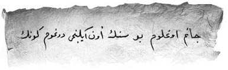

Cönk, çok özenle ciltlenmiş, oldukça kalın ve içi kahverengi parşömen kâğıtlardan oluşmuştu. Erim heyecanla açtı ve okumaya başladı:

Canım oğlum, bu, senin on ikinci doğum günün. Allah ömür versin! Eğer hayatta isem senin için yazdığım bu kitabı sana ben okuyor olacağım; eğer varsa kardeşlerinle beraber gülüş kıyamet eğleniyor olacağız ve bu kitabı çok seveceksin.
Hayat bu, eğer vatan ve sizler uğrunda şehit düşmüşsem bu satırları sen okuyor olacaksın. Eğer öyleyse bil ki çok önemli bir göreve adım attın demektir. Görevin boyunca yanında olacağım. Sen üç yaşındayken de cesur ve akıllı bir çocuktun, eminim şimdi de öylesin. Ben yarın bir görev için Anadolu’ya gidiyorum, mutlaka seni, anneni ve babaanneni görmek için gelirim, fakat görevim dolayısıyla sık sık gelme ihtimalim olmaz. Sana yemin ederim, düşmanlar sen bu kitabı okurken yurdumuzdan gitmiş olacaklar ve dışarıda Türk bayrağı dalgalanıyor olacak.
Bu satırları yazarken arada annenle beraber odana inip seni seyrediyor, yanaklarını kokluyor, öpüyoruz. Çok tatlısın. Bembeyaz yatağının içinde bembeyaz entarinle uyuyorsun, sanki beyaz bulutların içerisinden de sadece o mah cemalin[4] görünüyor. Kokuna doyamıyorum. Seni çok seviyorum. Babaannenin sana vereceği mektuptaki şifreyle adımını at oğlum.
Bu zor görevin sırasında çok yakın dostların, annen Gülten, babaannen ve kitabın seni yönlendireceği kişiler dışında kimseye güven duyma ve kimseye bir şey anlatma.
Asla pes etme. Kitap sana yol gösterecektir.
Baban Erdoğan
14 Mayıs, 1919